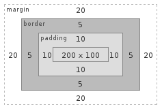

Each element in document tree generates zero or more boxes, so page generated in browser consists of these boxes. The layout of boxes depends on positioning scheme and box dimentions
We will talk about positioning later, for now let's see how box dimentions are calculated.
Let's look at the following example:
div#boxModel {
width: 200px;
height: 100px;
margin: 20px;
padding: 10px;
border: 5px solid gray;
background-color: white;
}
Box model of generated div is presented below:

Box model defines four areas - boxes:
Content box - rectangle specified by width and height properties or by it's rendered content.
Padding box - defines distance between content and border of an element.
Border box - surrounds padding box.
Margin box - defines outer dimentions of an element.
Padding, border and margin can all have 0 width. In such case their boxes are the same as content box.
Main thing to notice here is that by sepcifying 'width' and 'height' properties we declare width and height of content of the box, not it's dimensions on page.
Common mistake is assuming that padding and border are included in box dimensions, while they are added to it.
In our example width is 200px, padding is 10px and border is 5px, so full visible width of this div will be 200px + 10px*2 + 5px*2 = 230px;
By increasing border width you also increase div's width.
Margin property defines distance from outer edge of an element to other elements. It doesn't change visible box dimensions, but changes space which element occupies in browser window.
Shorthand properties
Each of box model elements has 4 edges that can be set using -top, -right, -bottom, -left properties
Fox example border-width-top or padding-left
It's possible to define them in 1 line using shorthand properties.
For example border-width: 1px 2px 3px 4px; will define border width of all 4 sides of the border box.
Properties are set in following order: top, right, bottom, left
Single value will set all sides to the same width: border-width: 2px; will make all for sides 2px wide.
Content
div#boxModelPlayground {
width: 100px;
height: 50px;
border: 5px solid green;
padding: 10px;
margin: 20px;
}